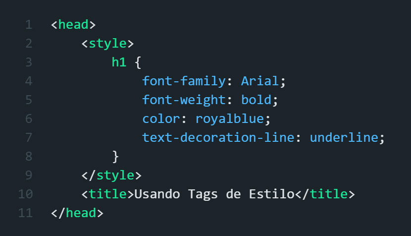
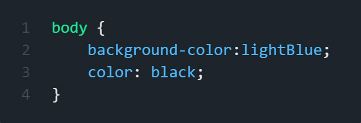

Uma maneira de adicionar estilo a um grupo de elementos é definir um estilo para cada elemento individualmente.
Como fizemos com h1 aula passada.
Existe uma maneira mais fácil de adicionar o mesmo estilo a um tipo de elemento. Começamos adicionando a tag style dentro das tags head.
Dentro das tags style, especificamos qual elemento estilizar com um seletor de tags.
Em seguida, adicionamos uma chave de abertura, "{", seguida por uma chave de fechamento, "}".
Agora, qualquer declaração que adicionarmos será aplicada a todos "h1" elementos da página da web.
Podemos adicionar outras declarações, "font-family: Arial;" desde que estejam em outra linha.

Usamos as tags acima em linha separadas e usando a tag style dentro das tags head personalizando assim o h1 desse documento HTML.
Por que usamos tags style?
Eles nos permitem estilizar vários elementos ao mesmo tempo.
O que é uma regra CSS?
Um seletor e suas declarações.
Se quisermos que um estilo se aplique a toda a página, podemos usar o seletor body.
Defina a cor do plano de fundo para lightBlue; dentro da regra body para que defina o plano de fundo para todo o corpo.
Estilos como color: black; quando definidos dentro da regra body serão aplicados a todos os elementos dentro da tag body.

Podemos estilizar quantos elementos quisermos dentro das tags style, desde que adicionemos um espaço entre as diferentes regras.
Como na segunda imagem de exemplo.
Usar a tag body é uma das maneiras mais fáceis de adicionar regras sobrepostas em elementos. Aprenderemos sobre as outras maneiras em breve.
Por que queremos estilizar o elemento body?
Para aplicar o estilo a todos os elementos dentro do elemento body.